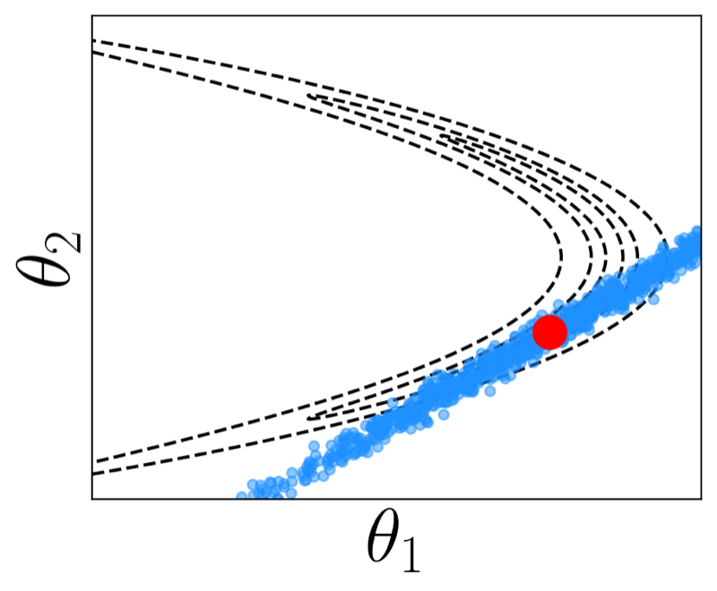
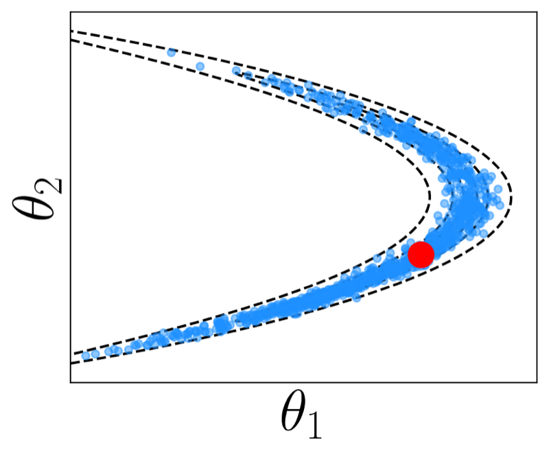
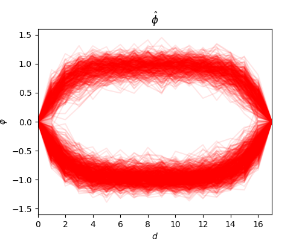
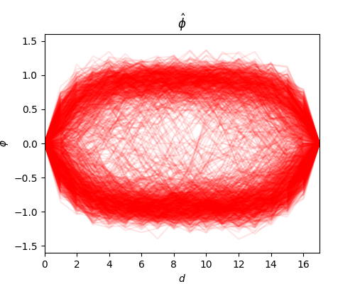
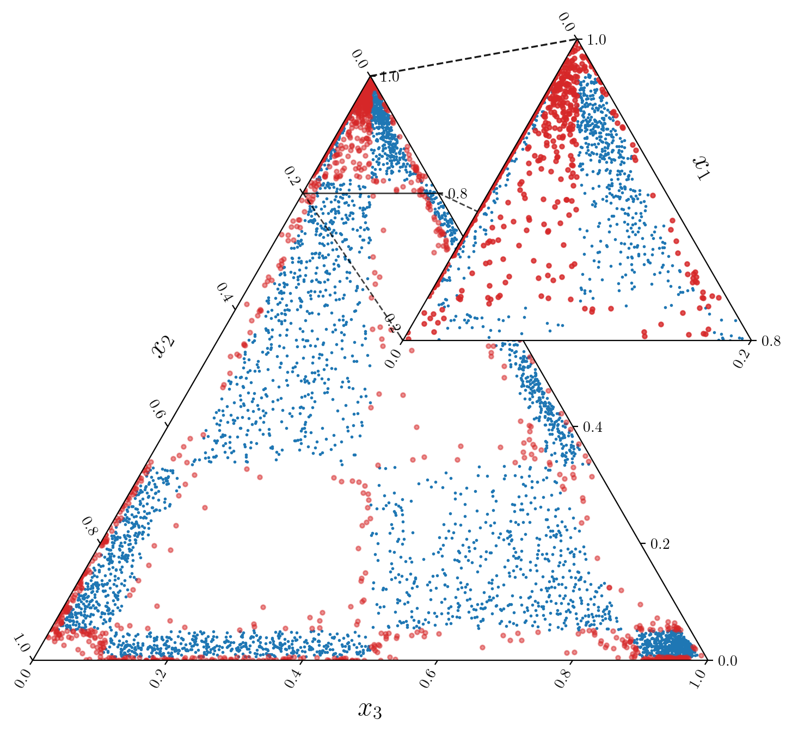
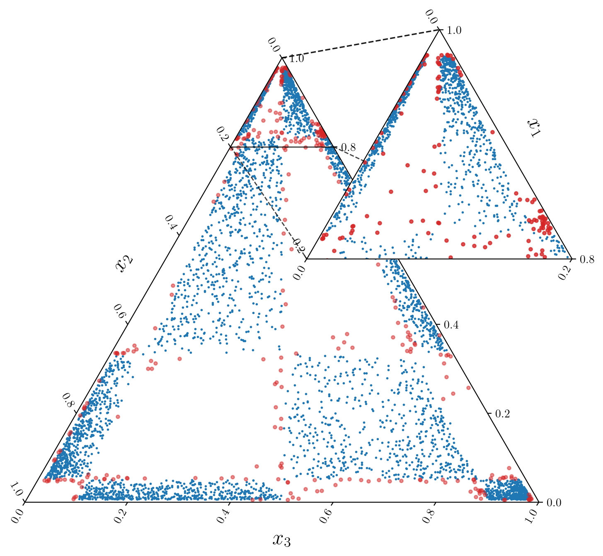

Lectio praecursoria
Bernardo Williams
University of Helsinki · 18 September 2026
How do we reach the other side?
A representative set of possibilities
The metric determines the path


Better geometric fit. Additional computation.
Paper I · Yu, Hartmann, Williams, Girolami & Klami · AISTATS 2024


Faster motion through low-density regions
Paper II · Williams et al. · UAI 2025
Three probabilities. Two free coordinates.
Relative probabilities become ordinary coordinates
Move inside. Keep the category.


Learn in continuous coordinates. Generate categories.
Paper III · Williams, Yeom-Song, Hartmann & Klami · AISTATS 2026
One input. One of several categories.
Exact latent inference in the constructed Gaussian model
Paper IV · Williams, Tetali, Klami & Hartmann
More faithful exploration. Useful representations.